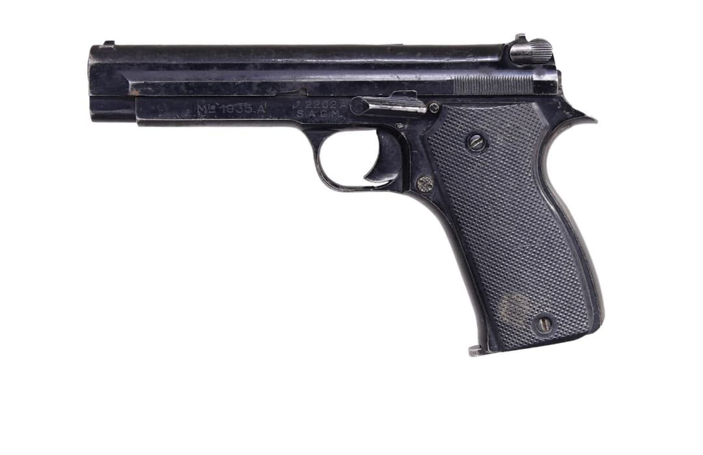

Les armes françaises de la Seconde Guerre mondiale représentent un ensemble varié de modèles issus de plusieurs décennies d’évolution. Entre modernisation rapide, héritage de la Grande Guerre et innovations techniques, l’armement français de 1915 à 1945 reflète une période complexe où coexistent équipements anciens et armes de conception récente.
Cette section du Musée HOP WW2 présente l’ensemble des armes blanches, fusils, pistolets, fusils-mitrailleurs, mitrailleuses et armes d’appui utilisées par les forces françaises durant le conflit. Chaque fiche offre une description détaillée, des photographies, et les éléments permettant d’identifier un modèle authentique.
Le pistolet automatique 1935A est l’un des deux pistolets réglementaires de l’armée française au début de la Seconde Guerre mondiale, avec le modèle 1935S. Conçu par la Société Alsacienne de Constructions Mécaniques (SACM), il se distingue par sa fiabilité, sa compacité et son fonctionnement moderne.
Chambré en 7,65 mm Long, il est distribué aux officiers, sous-officiers, équipages de chars, troupes motorisées et certaines unités spécialisées. Sa production reste limitée en 1939–1940, ce qui en fait une arme relativement rare.

Adopté en 1937, le pistolet 1935A est destiné à moderniser l’armement de poing français. Sa production reste cependant limitée avant 1940, ce qui explique sa rareté sur le terrain durant la campagne de France.
Après la défaite, il est réutilisé par les forces françaises libres, puis par l’armée française d’après-guerre, avant d’être progressivement remplacé par le MAC 1950.